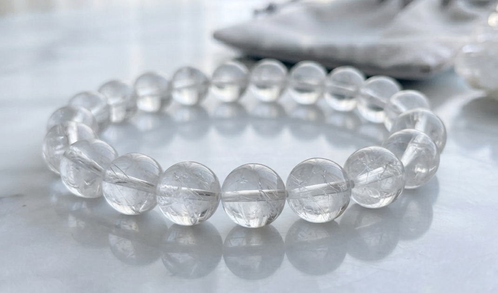
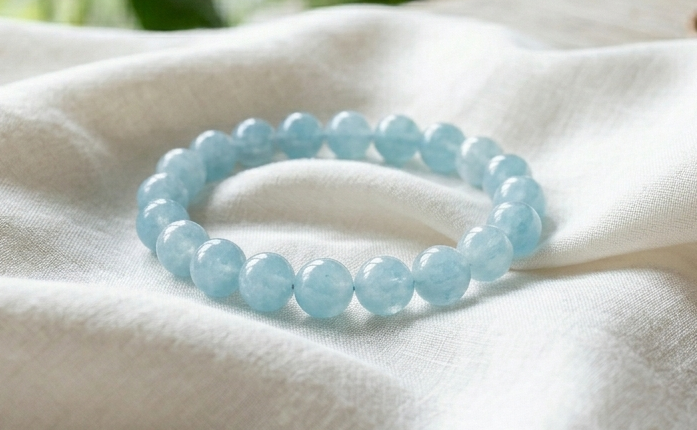

りょう様
詳細のご希望、ありがとうございます。
りょう様のために選んだ石について、
詳しくお伝えしますね。
りょう様の命の流れを視させていただき、
今のりょう様に最も必要な石を3つ選びました。
りょう様は、
雨粒のように音もなく染み込んでいく、
澄んだ水のような魂を持つ方です。
表には出さなくても、
物事の奥底まで見通す
静かな知恵を持っています。
でも、
本当は不安な時ほど人に見せず、
しんどい日も「大丈夫」と笑ってしまう感覚が
繰り返されやすい流れがあります。
2026年8月、そして11月。
この二つの月を経て、
長らく欠けていた支えの力が
満ちていく流れがすでに動き始めています。
その流れを最大限に活かすために、
りょう様のエネルギーと
罔象女神（みつはのめのかみ）が
深く共鳴する3つの石を選びました。

透明で澄んだ輝きを宿す石です。
りょう様の、
物事の奥底まで見通す
澄んだ水のエネルギーと最も深く共鳴します。
一人で抱え込みやすいりょう様の中で、
支えを受け取っても大丈夫という
安心感を静かに支えてくれます。

罔象女神と最も共鳴が強い石です。
澄んだ水色を宿す清水の石です。
りょう様の命の流れには、
今まさに整い、澄んでいく水のエネルギーが流れています。
アクアマリンは、その守護を日常の中で
ずっとそばに置いておける石です。
経過を静かに見守る力を後押ししてくれます。

柔らかく満ちていく光を宿す石です。
りょう様が
「大丈夫」と笑って一人で抱え込んでしまう場面のとき、
この石が、そのループを静かにほどいてくれます。
我慢する力を止めるのではなく、
それを「素直に受け取る力」へと
整えてくれる石です。
クリアクォーツ・アクアマリン・ムーンストーン。
この3つをりょう様専用に組み合わせて、
一つひとつ手作りで仕上げます。
罔象女神への祈祷とエネルギーチャージをして、
りょう様のもとへお届けします。
身につけていくうちに、
「頼ってもいい、受け取ってもいい」という感覚が
少しずつ戻ってきます。
不安を一人で抱え込みそうになる瞬間、
「大丈夫」と笑ってしまいそうな瞬間。
そういう揺らぎのとき、
石が静かにそのループをほどいてくれる。
日常の中で、守護がそばにある。
そして2026年11月、
りょう様自身の力が最も強まるその月に向けて、
エネルギーが整った状態で臨めるようになります。
りょう様の場合、
2026年8月から支えが静かに流れ込み始め、
11月にもっとも大きな節目を迎えます。
パワーストーンのエネルギーが
しっかりと馴染むまでには、
通常2〜3週間ほどかかります。
今から始めることで、
ちょうど8月からの支えを受け取る時期に、
エネルギーが整った状態で臨んでいただけます。
そして11月、
「もう大丈夫」と心から思えるその節目の月を、
りょう様の魂に罔象女神の守護が
深く根を下ろした状態で迎えていただけます。
- ご注文から7〜10日以内に発送
- 追跡番号付きで安心
- 専用の浄化・エネルギーチャージ済みでお届けします
今回ご購入いただいた方には：
- パワーストーンの取扱い・浄化方法のご案内
- ご購入から3ヶ月間、気になることがあればいつでもご相談いただけます
ご希望の方は、下のボタンよりお進みください。
ブレスレットを希望する
※ 別ウィンドウで購入ページが開きます
ご不明な点があれば、
お気軽にお尋ねくださいね。
りょう様が、
「受け取ってもいい」と
ご自身に許したその瞬間から、
罔象女神の守護が、
りょう様の澄んだ水を静かに支え始めます。
どうか、一人で抱え込み続けるのではなく
ご自身の手で、静かに受け取ってくださいね。